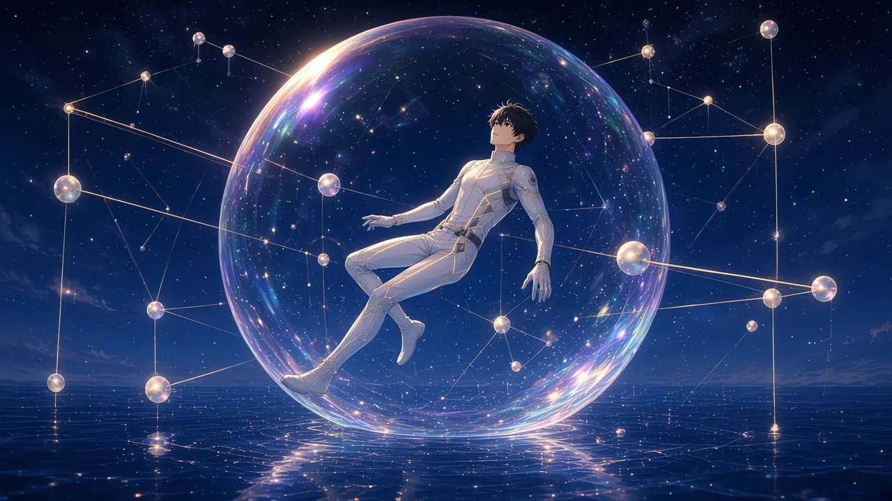

数字の表記はゲーム画面の表示に合わせています。
鏑木澪。
半年前に亡くなった、僕の恩師の名前だ。
葬儀で弔辞を読んだのは僕だった。あの人の最後の仕事場から、誰も代わりに読める人がいなかったから。
その人が、死んだあとの23:14に、僕へ海をひとつ送ってきた。
僕はニューロバンドを額に巻き、メモをデスクライトの下に置いた。灯りは消さなかった。
目を閉じる。
潜って、と、右上がりの字が言っていた。
＊
最初に聞こえたのは、水の音だった。
さざ波とも違う。もっと細かい、無数の泡がいっぺんに生まれては消えていくような音。
目を開けると、僕は夜の海の上に浮かんでいた。
正確には、泡の中に。
薄い膜が、僕をまるごと包んでいる。虹色の油膜のような光が、膜の表面をゆっくり流れていく。底のほうは貝殻のようにひだを寄せて、黒い海面にそっと乗っていた。
膜に触れると、指先がわずかに沈んだ。シャボン玉の内側に、手を当てたみたいに。
見上げる。
星空だった。けれど、知っている星空ではない。
星と星のあいだに、髪の毛より細い線が引かれていた。星座というより、誰かが解いている途中の計算式だ。線は数秒ごとに引き直され、そのたびに星の位置がほんの少し正確になっていく。
空が、計算されている。
ひとつだけ、妙な瞬き方をする一角があった。星が二つと三つ。少し間をおいて、一つと四つ。房になって、同じ拍子で点滅している。
どこかで見た並びだと思った。思い出す前に、線が引き直されて、房はほどけた。
足元を見る。
海は、底のない群青だった。光がどこまでも落ちていって、どこにも届かない色。
怖い、と思うより先に、きれいだと思った。
「接続を確認しました」
声がした。男とも女ともつかない、灯台の光を音にしたような声だった。
「これより、潜行の準備を始めます。あなたはいま、深度0mにいます」
視界の右端に、細い表示が浮かぶ。
【深度 0m】
＊
「最初に、あなたの名前を教えてください」
目の前に、透明な板が一枚ひらいた。
【名前を入力してください】
仕事柄、こういう画面は何百と作ってきた。入力欄の幅、カーソルの点滅の速さ。どれも、よくできている。
僕は指で、二文字を書いた。
ルカ。
確定した、その瞬間だった。
入力欄の「ル」と「カ」が、ふわりと浮いた。小さな二つの泡になって、膜を抜け、黒い海へ沈んでいく。
あとに残った欄は、空白だった。
ただの空白ではない。白い紙に水が染みたように、名前のあった場所がにじんで、ぼやけている。そのにじみの上に、記号が三つ、静かに浮かんだ。
【？？？】
「……え？」
文字化けではなかった。壊れたアイコンでもない。書式はきちんと整っている。ただ、名前の場所だけが、ぽっかりと名前のない色をしていた。
もう一度、書く。ルカ。
【？？？】
汐見ルカ。LUCA。試しに、ひらがなで「あ」。
【？？？】
何を入れても、三つの疑問符が、同じにじみの上に戻ってくる。
仕様だろうか。いや、こんな仕様は作らない。名前は、遊ぶ人が最初に世界へ差し出すものだ。それを受け取らない入口なんて、設計者なら誰でも避ける。
メニューを探した。不具合の報告。問い合わせ。どこかにあるはずだ。
あった。【お問い合わせ】。触れる。
【この海に、管理者はいません】
それきりだった。宛先のない世界。苦情を言う相手すら、ここにはいない。
僕が作ってきたどの世界にも、窓口はあった。閉じる日にさえ、最後まで。
「名前は、未登録のまま進行できます」
灯台の声は、少しも困っていなかった。
「表示名は、仮に【？？？】とします」
仮に、か。
膜の表面に、僕の名札が映っていた。淡い水色の枠の中で、三つの疑問符が、まだかすかににじんでいる。
＊
周りを見ると、ほかにも泡が浮かんでいた。
夜の海面に、ぽつり、ぽつりと。どれも誰かを一人ずつ包んで、同じように星を見上げている。今夜潜りはじめた、ほかのダイバーたちだろう。
泡の上には、それぞれ名札があった。
【ミズハ】【kei_0412】【カナデ】
ちゃんと名前がある。少しだけ、うらやましかった。
ふと、いちばん近い泡の名札に目がとまった。
【カナデ】
その最後の一文字が、ゆっくりと形を変えていく。デ、の濁点が、水に溶けるように薄れて――
【カナテ】
瞬きをすると、【カナデ】に戻っていた。
描画の取りこぼしだろうか。設計者の目が、勝手にそう分類する。けれど、背中のどこかが冷えた。
泡の中の誰かは、気づいていないようだった。
＊
「次に、あなたを包むものについて説明します」
灯台の声が続ける。
「それは泡殻。あなたの体であり、あなたの命の厚みです。泡殻がすべて割れることを、この海では破泡と呼びます」
視界の左下に、細い虹色のゲージが現れた。HP。泡殻の厚み。
「深く潜るほど、水は重くなります。どこまで潜れるかは、PRS――耐圧で決まります」
そこで、声はほんの少しだけ間をおいた。
「この海の最深部は、深度20,000m。零溝と呼ばれています」
二万メートル。
現実の海でいちばん深い場所は、たしか一万一千メートルほどだ。その倍近い。
計算上、ありえない深さ。それを、この声は当たり前のように言った。
「あなたの現在の状態です」
透明な板が、もう一枚ひらく。
？？？ Lv 1 ジョブ：未選択
HP 120 LUX 30 STR 12
MAG 6 DEF 9 SPD 14
LCK 7 PRS 20 FRG 10
見慣れた並びだった。力、魔力、守り、速さ、運。光の量がMPのかわりらしい。
PRS 20。泡殻を削られずに潜れるのは、200mまで。
最後の一つだけ、見たことがなかった。指で触れる。
【FRG（儚さ）：高いほど強く、高いほど壊れやすい】
壊れやすさが、ステータスになっている。
どう計算に効くのかは書いていない。けれど設計者として、その一行には少し惚れた。
「最後に、ジョブの試着ができます」
返事をする前に、体が光に包まれた。
白い潜水服。継ぎ目に琥珀色の光が走っている。右手には、金色に輝く長い銛。
【試着中：銛撃士】
銛は、驚くほど軽かった。穂先から、細い光の粒がこぼれて海面に落ちる。落ちたところで、小さな泡がいくつも生まれた。
計算された星空の下、にじんだ名札を頭上に浮かべて、僕は誰でもない狩人の格好をしていた。

「ジョブは、浅瀬の祠で選ぶことができます」
【試着を終了します】
銛がほどけた。光の粒になって、指のあいだから海へこぼれていく。
残ったのは、空っぽの右手だった。
＊
「では、最初の練習です」
海面が、ぷくりと盛りあがった。
浮かんできたのは、手のひらほどのクラゲだった。透きとおった傘の中に、小さな泡を一つ抱えている。その泡が、心臓みたいに明滅していた。
【泡クラゲ HP 40】
頭上に、短いゲージ。
「素手で構いません。触れてみてください」
武器はない。殴るしかない。
泡殻の膜ごしに、拳を突き出した。
手ごたえは、思ったより柔らかかった。傘がへこむ。一拍おいて、クラゲの上に白い数字が浮かんだ。
「16」
数字は少しふくらみ、それから――ぱちん、と。
数字の泡が弾けた。
音が気持ちいい。シャボン玉を指でつついたときの、あの小さな音を、少しだけ澄ませたような。
クラゲが触手を振った。膜がちくりと揺れる。
「4」
今度は僕の上で、赤い数字が弾けた。HPのゲージが、ほんの少しだけ痩せる。
もう一発。
「18」
ぱちん。
さっきより大きい。同じ拳なのに、数字が揺らぐ。乱数だ。この揺らぎがあるから、次を殴りたくなる。
分かっている。全部、分かっている。どの数字をどの間合いで出せば人が気持ちよくなるか、僕は仕事で知っている。
それでも。
三発目を構えたとき、拳の先がかすかに光った。
「CRITICAL 26」
金色の縁どりの数字が、ひときわ大きくふくらんで、弾けた。
クラゲの残りの体力は、6しかなかった。26は、使いきれなかった数字だ。それでも、クリティカルの表示は全部の値を見せてくれる。
……この演出は、気持ちいい。
負けた、と思った。うれしい負け方だった。
クラゲがほどけて、光の粒になる。その粒が、僕の泡殻に吸いこまれていく。
そして、それは来た。
ファンファーレ。
どこからともなく、短く明るい金管の音。頭上に金色の泡がいくつも生まれて、ひとつずつ弾けていく。
【LEVEL UP!】Lv 1 → Lv 2
HP 120 → 160 STR 12 → 15
PRS 20 → 30
思わず笑っていた。
名前がないのに。誰でもないのに。数字だけが、こんなに素直に祝ってくれる。
不安と快感が、胸の中で同じ泡の中に入っている。どちらも弾けずに、ただ並んで浮かんでいた。
＊
「潜行を開始します」
泡殻が、ゆっくりと沈みはじめた。
海面が頭上に遠ざかる。計算された星の光が、波の裏側で揺れてちぎれる。群青が、四方から静かに満ちてくる。
【深度 -12m】
【深度 -31m】
耳の奥で、水がかすかにきしんだ。重さが、膜ごしに伝わってくる。
【深度 -60m】
そこで、沈むのが止まった。
見下ろすと、はるか下に、淡い翠の光がにじんでいた。珊瑚の色だろうか。
そのさらに下は、ただの闇だった。
さっき沈んでいった二つの小さな泡を、僕は思い出していた。ル、と、カ。
あれは、どこまで落ちていったのだろう。
そのとき、闇の底から、泡が一つだけ昇ってきた。
僕の膜のすぐ外で、それは弾けた。
海の底から、聞いたことのない声がした。
「その名前、もらったよ」